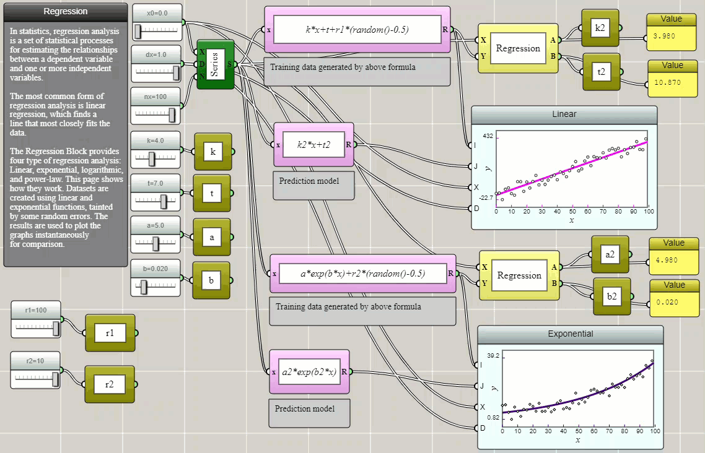
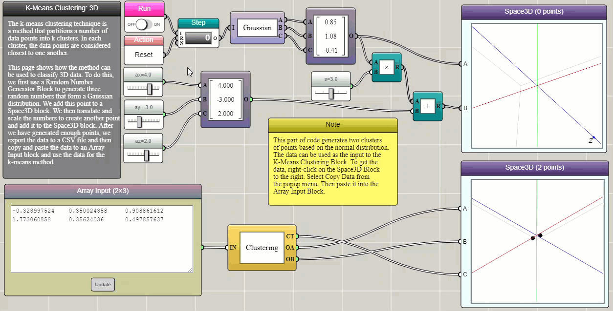
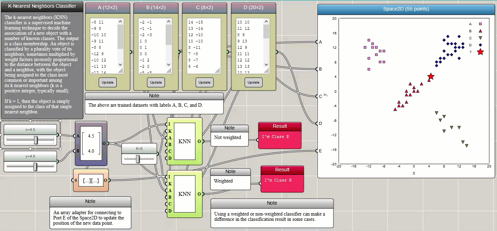
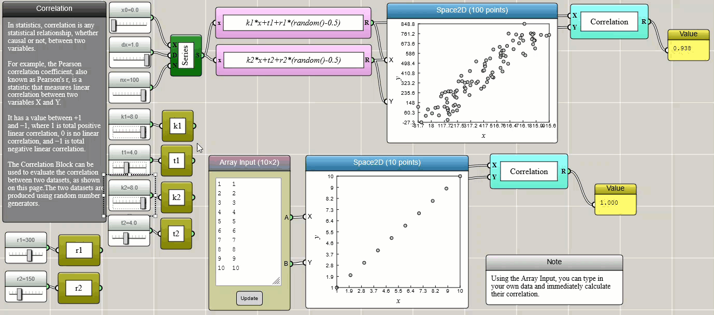

Visual and Interactive Machine Learning with iFlow
Regression, clustering, nearest neighbors, and correlation become inspectable and playable when rendered as iFlow diagrams.
Generally speaking, machine learning is a computational procedure to build models based on sample data, known as "training data", in order to make predictions or decisions without being explicitly programmed to do so. The purpose of this article is to show that machine learning can be fun if it is made visual and interactive. We use some simple machine learning techniques currently supported in iFlow to make our case. Note that these tools built in iFlow are not necessarily limited to teaching and learning. Professionals may also find them useful for performing flexible visual data analysis in their work as well.
Note that the power of an iFlow program is that it does not just analyze a single dataset. Once set up, each program can be used to solve a class of problems with flexible user interfaces ready for adjusting parameters or changing inputs. Hence, an iFlow program can be conveniently reused to analyze a different dataset.
Regression
Regression is a method for estimating the relationships between a dependent variable and one or more independent variables. In the following example, we create some randomized data and use Regression blocks provided in iFlow to fit them with selected models. The parameters thus determined are then stored as global variables and used to plot the models on top of the original data using function blocks to show how well they fit and visually verify the results.

k-means clustering
k-means clustering is a method that partitions n observations into k clusters in which each observation belongs to the cluster with the nearest mean (cluster centers or centroids). This example demonstrates how it can be used to separate two groups of data in three-dimensional space, which are generated using two Gaussian functions that have different expected values and variances. In iFlow, the generated data can be easily copied and pasted into an Array Input block that provides the input to the Clustering block. True to form, this tool as shown in the following example succeeds in identifying the two Gaussian clusters (the data are represented by different symbols with different colors, though we had to switch the data channels in the 3D graph to match the visualization of the original dataset).

k-nearest neighbors classification
k-nearest neighbors (k-NN) is a simple method that classifies a member into different categories. The training data (samples) are often represented by vectors in a multidimensional feature space, each with a class label. The training procedure involves storing the feature vectors and class labels of the samples. Classification of an unlabeled vector involves assigning it the label carried by the majority of its k nearest neighbors. k is an integer parameter chosen by the user. A commonly used distance metric for continuous variables is the Euclidean distance. Other distances such as the Manhattan distance are also provided in iFlow. The metric can also be adjusted by weighting factors. The following example illustrates how k-NN works. Four trained datasets, labelled as A, B, C, and D, respectively, are provided through four Array Input blocks and connected to a Space2D block for visualization so that we can intuitively see the positions of the data points. You can change these samples in any way you would like or add more training samples. Two sliders are used to set the x and y coordinates of the new data to be labelled. The new data is also represented by a star in the Space2D graph so that we can see where it is located and which label it is assigned.

Correlation
Pearson correlation is a method to measure the relationship, whether causal or not, between two variables.
